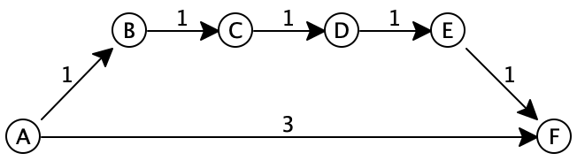

Lecture 31: Dijkstra’s Algorithm for single-source shortest paths
Computing the shortest path between two nodes; comparison with breadth- and depth-first searches
The explanation of the algorithm here is slightly different than the classic presentation. It has been adapted to more closely fit the style of the last lecture. See the last section for details of the differences.
In the last lecture, we considered two approaches for finding some path between a source and target node in a graph. With depth first search, we started from the source, and chose any edge leading out of it. We continued down that edge, choosing any subsequent edge, and kept diving deeper and deeper into the graph, provided always that we didn’t double-back and reach a vertex we’d already seen. If there were no further edges available to us, we backtracked to the previous node, and considered some other edge leading away from it. This algorithm ensures that we completely exhaust all possibilities of paths through a given node before we abandon it and move on: once we backtrack out of a node, we know there is no possible way for that node to reach our target.
Do Now!
Why?
With breadth-first search, we started from the source, then considered all nodes reachable from there. Then we considered all nodes reachable from any of those (i.e. reachable within two edges from the source.) Then we considered any nodes reachable from those (i.e., reachable within three edges from the source). We continued in this manner until we eventually found the source. This algorithm ensures that we completely exhaust all short paths before trying longer ones, and ensures that we find the shortest path to the target.
Do Now!
“The” shortest path or merely “a” shortest path? Why?
However, not all paths are always created equal.
31.1 Staying frugal: Finding a cheapest path between two vertices
Suppose we’re trying to book a cross-country flight. A simplistic approach would simply build a graph whose nodes are airports and whose edges are flights between them, and search for any path connecting our source to our destination.
But not all flights are equally appealing. We might choose to prioritize ticket prices over everything else, and be willing to accept a lengthier travel duration to accomplish it. Or we might prioritize travel time over all else, and be willing to buy a more expensive flight to get to our destination faster. Or we might be fuel-conscious, and focus on a shortest total flight distance at the expense of time or money. Or we might prioritize convenient departure times, or arrival times, or ... Evidently, the apparent cost of a given flight between two locations might depend on many factors, and treating all edges in the graph equally doesn’t capture that. Instead we need a weighted graph, where the edge weights capture our intended priorities about the attractiveness of individual flights. And our goal is not to achieve the fewest flights, but the cheapest flight according to our weights.
Do Now!
Depth-first search was a general search technique that used a stack as its worklist. Breadth-first search was a general search technique that used a queue as its worklist. What data structure do you expect we ought to use for searching by best weight?
In Lecture 29 we encountered priority queues, which were a data structure that supported efficiently adding prioritized items, and removing the highest-priority item. In that setting, our notion of “highest priority” was “the largest number”. In this setting, our notion of highest priority is going to be “cheapest-weighted flight.”
Do Now!
Reimplement the priority queue data structure from Lecture 29, so that the minimum number is always at the top of the heap, rather than the maximum. This should be fairly straightforward... Abstract your definitions of max-heaps and min-heaps to be a single implementation: how can you abstract over the heap-ordering to be used?
Suppose we simply copy the implementation from breadth-first search, but change the use of a Deque to the use of a PriorityQueue. What weights should we use as the priorities?
boolean searchHelp(Vertex from, Vertex to) { Deque<Vertex> alreadySeen = new Deque<Vertex>(); PriorityQueue<Vertex> worklist = new PriorityQueue<Vertex>(); // Initialize the worklist with the from vertex worklist.add(from); // As long as the worklist isn't empty... while (!worklist.isEmpty()) { Vertex next = worklist.remove(); if (next.equals(to)) { return true; // Success! } else if (alreadySeen.contains(next)) { // do nothing: we've already seen this one } else { // add all the neighbors of next to the worklist for further processing for (Edge e : next.outEdges) { // What should the priorities be? worklist.add(e.to, ???????); } // add next to alreadySeen, since we're done with it alreadySeen.addAtHead(next); } } // We haven't found the to vertex, and there are no more to try return false; }
Supppose we simply use each edge’s weight. Let’s see if that works with the following graph, where we want to get from A to F:

The worklist starts off as [], and alreadySeen is also [].
worklist: [], alreadySeen: []
We add A to the worklist.
worklist: [A(0)], alreadySeen: []
We start the while loop. Since the worklist isn’t empty, we remove the first item from it and assign it to next.
worklist: [], alreadySeen: [], next: A
Since next isn’t node F, and since alreadySeen does not contain it, we get to the else case, and add each of A’s neighbors (namely B and F) to the worklist, with priorities 1 and 3 respectively.
worklist: [B(1), F(3)], alreadySeen: [A]
We return to the start of the while loop. Since the worklist isn’t empty, we remove the first item from it and assign it to next.
worklist: [F(3)], alreadySeen: [A], next: B
Since next isn’t node F, and since alreadySeen does not contain it, we get to the else case, and add each of B’s neighbors (namely C) to the worklist, with priority 1.
worklist: [C(1), F(3)], alreadySeen: [A, B]
We return to the start of the while loop. Since the worklist isn’t empty, we remove the first item from it and assign it to next.
worklist: [F(3)], alreadySeen: [A, B], next: C
Since next isn’t node F, and since alreadySeen does not contain it, we get to the else case, and add each of C’s neighbors (namely D) to the worklist, with priority 1.
worklist: [D(1), F(3)], alreadySeen: [A, B, C]
We return to the start of the while loop. Since the worklist isn’t empty, we remove the first item from it and assign it to next.
worklist: [F(3)], alreadySeen: [A, B, C], next: D
Since next isn’t node F, and since alreadySeen does not contain it, we get to the else case, and add each of D’s neighbors (namely E) to the worklist, with priority 1.
worklist: [E(1), F(3)], alreadySeen: [A, B, C, D]
We return to the start of the while loop. Since the worklist isn’t empty, we remove the first item from it and assign it to next.
worklist: [F(3)], alreadySeen: [A, B, C, D], next: E
Since next isn’t node F, and since alreadySeen does not contain it, we get to the else case, and add each of E’s neighbors (namely F) to the worklist, with priority 1.
worklist: [F(1), F(3)], alreadySeen: [A, B, C, D, E]Do Now!
Why is F present in the queue twice?We return to the start of the while loop. Since the worklist isn’t empty, we remove the first item and assign it to next.
worklist: [F(3)], alreadySeen: [A, B, C, D, E], next: F
Since next is our destination, we stop.
Do Now!
What should our priorities be instead?
Suppose we took a more holistic view: instead of only using the weight of an individual edge, let’s use the edge weight plus the total cost to get to the node so far. That way, our priorities will account for the cost of the total path, and if an initially-promising path turns out to be more expensive than we thought, another cheaper path will eventually beat it out to the front of the priority queue, and we’ll switch paths entirely.
The worklist starts off as [], and alreadySeen is also [].
worklist: [], alreadySeen: []
We add A to the worklist.
worklist: [A(0)], alreadySeen: []
We start the while loop. Since the worklist isn’t empty, we remove the first item from it and assign it to next.
worklist: [], alreadySeen: [], next: A, weight so far: 0
Since next isn’t node F, and since alreadySeen does not contain it, we get to the else case, and add each of A’s neighbors (namely B and F) to the worklist, with priorities 1 and 3 respectively, plus the weight so far of 0.
worklist: [B(1), F(3)], alreadySeen: [A]
We return to the start of the while loop. Since the worklist isn’t empty, we remove the first item from it and assign it to next.
worklist: [F(3)], alreadySeen: [A], next: B, weight so far: 1
Since next isn’t node F, and since alreadySeen does not contain it, we get to the else case, and add each of B’s neighbors (namely C) to the worklist, with priority 1, plus the weight so far of 1.
worklist: [C(2), F(3)], alreadySeen: [A, B]
We return to the start of the while loop. Since the worklist isn’t empty, we remove the first item from it and assign it to next.
worklist: [F(3)], alreadySeen: [A, B], next: C, weight so far: 2
Since next isn’t node F, and since alreadySeen does not contain it, we get to the else case, and add each of C’s neighbors (namely D) to the worklist, with priority 1 plus the weight so far of 2.
worklist: [D(3), F(3)], alreadySeen: [A, B, C]
We return to the start of the while loop. Since the worklist isn’t empty, we remove the first item from it and assign it to next.
worklist: [F(3)], alreadySeen: [A, B, C], next: D, weight so far: 3
Since next isn’t node F, and since alreadySeen does not contain it, we get to the else case, and add each of D’s neighbors (namely E) to the worklist, with priority 1 plus the weight so far of 3.
worklist: [F(3), E(4)], alreadySeen: [A, B, C, D]
We return to the start of the while loop. Since the worklist isn’t empty, we remove the first item and assign it to next.
worklist: [E(4)], alreadySeen: [A, B, C, D, E], next: F, weight so far: 3
Since next is our destination, we stop.
Exercise
Extend the code above so that instead of merely returning true, it returns a list of the vertices along the path from the source to the destination.
31.1.1 Efficiency of cheapest-first search
We process every edge in the graph at most once, and add it to the priority queue at most once. Our worklist could, partway through the algorithm, contain nearly all of the edges in the graph. The maintenance of the priority queue will therefore be the overarching cost of the algorithm, and is at worst \(O(E\log_2 E)\).
31.1.2 Rewriting BFS and DFS again
// Represents a mutable collection of items interface ICollection<T> { // Is this collection empty? boolean isEmpty(); // EFFECT: adds the item to the collection with the given priority void add(T item, int priority); // Returns the first item of the collection // EFFECT: removes that first item T remove(); }
31.2 Dijkstra’s algorithm
The algorithm presented above is, in essence, a famous algorithm discovered by
Edsger Dijkstra in 1956. His original version of the algorithm is written
slightly differently: it avoids adding a node to the worklist more than once.
The tradeoff is that he still needs to be able to raise the priority
(i.e. lower the weight) of a node already existing in the priority queue, to
accommodate finding a cheaper route through the graph as the algorithm proceeds
(as we did with node F above). Raising the priority of an item in a heap is
easy —
Exercise
Revise your implementations of the code above to handle this optimization.
Dijkstra specified his algorithm using different implementations of priority
queues than the binary heap that we implemented in Lecture 29. Using other,
more sophisticated (and complex) heap implementations can bring down the cost
of this algorithm to something cheaper, \(O(E + V \log_2 V)\). Obtaining
this better efficiency is beyond the scope of Fundies 2 —